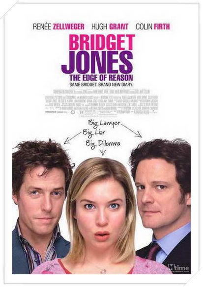

“Bridget Jones's Diary”tells of thiryish English officeworker who is plumpish klutzy,and unsure of herself but dawntlessly playing the mating game in spite of her imperfections.
《Bridget Jones's Diary》共有两部，2001年发行的第一部，2004年第二部。看完第一部之后禁不住想继续看第二部，一口气看完两部《Bridget Jones's Diary》，两部戏一直沿用三位男女主角，不是什么浪漫爱情故事，也不是唯美主义的误导，剧中女主角也不是漂亮女人......很真实，带点轻喜剧色彩，芮妮.齐薇格把这个英国单身大龄女性角色演绎的傻气而可爱，不对感情气馁，积极生活，第二部中她和马克的爱情出现了问题，爱情并不是一帆风顺的......这部电影值得推荐一下！

芮妮.齐薇格 （Renee Zellweger），休.格兰特 （Hugh Grant）和科林.弗思 （Colin Firth）主演的《Bridget Jones's Diary》，讲述发生在英国伦敦单身男女的故事。家住在伦敦西区的32岁的女主人公布里奇特·琼斯（Renee Zellweger）是一位在出版社工作的单身女子，工作平淡无奇，她没什么野心和抱负，唯一的愿望就是能减轻体重以及寻找到一份真正的爱情，可这些对她来说依然是那么遥不可及--琼斯的感情生活似乎永远是危机四伏，男朋友换了几个，总也找不到跟自己合拍的人。渐渐地故事开始发生了，两个和她发生感情的男人：一个是像小说人物一样完美的丹尼尔·克里弗（休·格兰特）；另一个是一身毛病但很真实的马克·达西（科林·菲尔斯）。这两个人的出现叫琼斯又欣喜又发愁，她思前想后也拿不准自己该挑哪一个。看来，新的生活中依然有不少麻烦陪伴着琼斯，不过她却乐在其中呢......
13 Responses to “Bridget Jones's Diary”
2006-12-11
现实生活中这样的选择也很多，到底选哪个，我觉得是自己经历过了才会知道。
2006-12-11
你说的这个电影我看过，是COMEDY，很搞笑的。现在在国外生活跟你们在国内也差不多了，EMAIL和电话很方便，花$30/月能把国内香港台湾的所有电视一网打尽，花$80/月 就能有200多个ENGLISH CHANNEL还包括3M的宽带，光电影CHANNEL就有20-30个，还有ON DEDAMD (几百个电影可选择)。看看新闻体育就睡觉了。
2006-12-11
对了还有三四个成人台可供选择，不过，要加钱，好像是$3。99可看24小时，我一次也没看过，觉得不值得，11：00以后有两三个电影CHANNEL 放成人电影 (三级片)。成人纪录片挺有意思，昨天看了一个讲成人电影明星的生活的纪录片，总之，能让你了解一个生活在完全不同的世界里的人的生活。
2006-12-12
柚子，为什么你总留一些不相关的评论呢？建议你去SINA开一个自己的博。
2006-12-12
茶，推荐你点动画片:
Over the Hedge
Barnyard
Ice Age 2
The Ant Bully
Cars
2006-12-12
老片子了,其中第2部在泰国坐牢描写得比较老套.
但是比较适合你看，这两部是传统的女性电影，播放时电影院里几乎是女士专场
2006-12-14
MARTIN：
你的建议很好，不过，我不打算开博，没太多精力照顾，看看别人的博就可以了。至于评论，CHRISTINA 这里不是一个茶馆吗？ 我也是想到那里说到那里。
2006-12-15
柚子，我真的建议你开个华人在美国百科大全，把你在这留得言搜集搜集就齐了
2006-12-15
至于你的评论，没错，christina这里是个茶馆，不过我们都是在一桌上喝茶的，我不太喜欢您加的sugar&cream，我还是喜欢喝中国茶。
2006-12-18
这部片子超搞笑，我好喜欢女主角，她虽然不是很漂亮，而且有点胖，又有点傻呼呼的，不过真的好可爱。挺浪漫的爱情故事……
2006-12-22
为啥总是有人看不惯游子,他就是有点爱说自己的事,那也没啥阿,不也有那么多人爱看别人说事. 虽然有时候我也觉得他说的不那么中听.....恩,还是,宽容点,宽容点,何况是公众场合呢
2006-12-25
喜欢colin firth
好男人，好演员阿
一点绯闻都没得
下了他的love actullay
适合圣诞夜看的片子
2006-12-26
love actullay 不算是新电影，不过我倒是向别人极力推荐过。的确很好看的片子，那个过气的老摇滚明星~~嘿嘿~~
Leave A Reply
存档只读，评论已关闭。